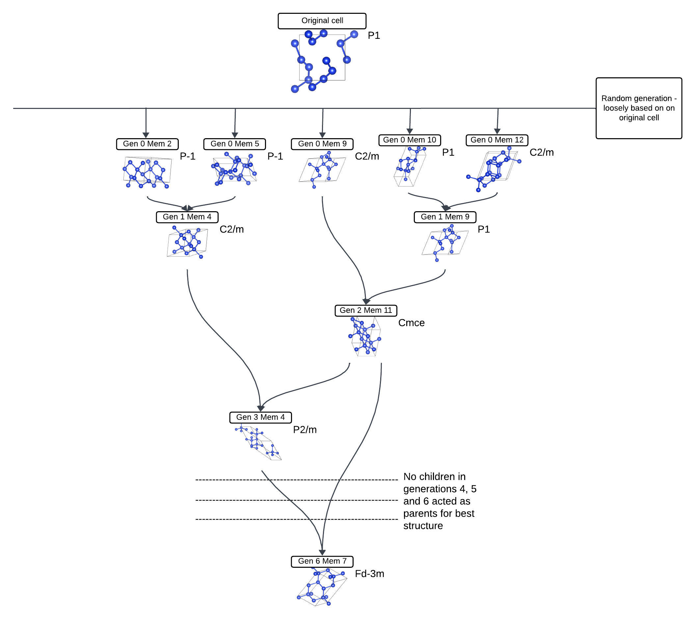

Introduction
In this tutorial we will look at exactly what castep GA is doing when it is used, examining what the input files do what the output files tell us. We will go through a silicon example to do so - starting from a heavily distorted diamond cell and ending in a diamond structure.
Input Files
We will use the cell file
Si.cell
%block LATTICE_ABC
ang
5.4 5.4 5.4
90 90 90
%endblock LATTICE_ABC
%block POSITIONS_FRAC
Si 0.2 0.01 0.04
Si 0.21 0.29 0.30
Si 0.59 0.43 0.03
Si 0.9 0.81 0.30
Si 0.53 0.03 0.58
Si 0.72 0.21 0.79
Si 0.04 0.45 0.4
Si 0.28 0.85 0.69
%endblock POSITIONS_FRAC
%BLOCK SPECIES_POT
QC5
%ENDBLOCK SPECIES_POT
symmetry_generate
symmetry_tol : 0.05 ang
Note that this is just a heavily distorted version of a ideal diamond silicon cell - LATTICE_ABC defines its cubic structure with the lattice parameter that is expected, while the fractional positions of all the Si's are slightly moved from where they'd be expected for diamond - for example the first line
Si 0.2 0.01 0.04
is only a bit off from where it'd be in a perfect diamond, which is
Si 0 0 0
In a normal castep GA run the positions of all the Si's, and even the starting unit cell, is completely arbitrary, and in most cases it should have little impact on the run. However, in this case we are trying to get it to get to diamond quickly, so that it is easier to analyse what is going on.
For the param file we will use
task = genetic algor # Run the GA
ga_pop_size = 12 # Parent population size
ga_max_gens = 6 # Max number of generations to run for
ga_mutate_amp = 0.05 # Mutation amplitude (in Angstrom)
ga_mutate_rate = 0.1 # Probability of mutation to occur
ga_fixed_N = true # Fix number of ions in each member based on input cell
rand_seed = 129189 # Random seed for replicability
# continuation = Si.xyz
#################################################################
# CASTEP Geomtery Optimisation Parameters #
# These will be used for each cells geom opt/fitenss evaluation #
#################################################################
comment = Si_Convex_hull
#rand_seed = 100003 # Random seed for replicability
opt_strategy = SPEED # Run quick
geom_max_iter = 211 # Can have a large max iter as using pair potentials
# Don't write most output files for each population member
write_checkpoint = NONE
write_bib = FALSE
write_cst_esp = FALSE
write_bands = FALSE
write_cell_structure = TRUE
######################################
# Any extra devel code options #
# & required GA specific devel flags #
######################################
%block devel_code
# Command used to call castep for each population member
# If not given this defaults to castep.serial
CMD: castep.serial :ENDCMD
GA:
PP=T # Using a pair potential
IPM=M # Randomly mutated initial population
CW=24 # Num gens for convergence
NI=F # No niching
FW=0.5 # Fitness weighting
# Asynchronous running options
# Required for asynchronous running, without this all geom opts will be run
# one after another
AS=T # Run geometry optimisations asynchronously
MS=3 # Run 3 geometry optimisations at once
# Random symmetry children
NUM_CHILDREN=11
RSC=T
RSN=1
CORE_RADII_LAMBDA=0.8 # Core radii 0.8 pseudopotenital radii
SCALE_IGNORE_CONV=T # Ignore convergence in fitness calcualtion
:ENDGA
# Use pair potentials in geometry optimisations and perform a final snap to symmetry
GEOM: PP=T SNAP=T :ENDGEOM
# Use the Stillinger-Weber pair potential
PP=T
PP:
SW=T
:ENDPP
%endblock devel_code
There is a lot more to discuss here. For more information on all the key words look at the documentation (ADD LINK LATER). However, let's look at the key information here:
ga_max_gensdefines the number of generations it will run for. 6 is a very low amount, but it does the job herega_mutate_ampdescribes how severe the mutations are. Again, this is using a low number because we're starting not too far off the final resultga_mutate_ratetells you the probability of different parts of the cell mutating - 0.1 is a fairly ordinary value to use
A key line for this tutorial is
rand_seed = 129189
This means that you may be able to replicate similar results, though that isn't guranteed [[CHECK IF EVEN TRUE]]
Running
We can now run castep GA on the Si. This should take about 3 minutes to run, but look at what is happening as it is running - you can use tail -f Si.castep to keep track of how the castep output file is being generated. Also, refresh your directory regularly to see what's being generated.
The first files to be generated will have the same format as Si.gen_000_mem_001.cell and Si.gen_000_mem_001.param - this is the 1st member of the 0th generation, which is generated randomly using the Si.cell as well as the mutation values specified in the Si.param file
Note
I will refer to future files as being <seed>.file_endingin the interest of brevity, specifying details where necessary
You should get a total of 12 members like that, up to mem_012. As it's running, the 0th generation will start to get <seed>.geom and <seed>-out.cell outputs for each member. These are obtained as fast geometry optimisations (ADD LINK) are performed on the randomly generated cells.
After the last member finishes its geometry optimisation, the next generation is generated: you'll get <seed>.cell and <seed>.param files.
This is the point where the castep output file gets interesting. You have a table that starts like
GA: gen # 1 parent # 1 enthalpy = -3.940733E+000 eV/atom un-scaled fitness = 0.684242 conv = T member error = F seed = Si.gen_000_mem_001 vol/ion = 19.4307 A**3/atom
GA: gen # 1 parent # 2 enthalpy = -4.070795E+000 eV/atom un-scaled fitness = 0.791433 conv = T member error = F seed = Si.gen_000_mem_002 vol/ion = 20.4806 A**3/atom
GA: gen # 1 child # 11 enthalpy = -4.200422E+000 eV/atom un-scaled fitness = 0.868980 conv = T member error = F seed = Si.gen_001_mem_011 vol/ion = 20.7893 A**3/atom
GA: gen # 1 child # 12 enthalpy = -3.296903E+000 eV/atom un-scaled fitness = 0.119203 conv = T member error = F seed = Si.gen_001_mem_012 vol/ion = 28.3264 A**3/atom
The parent rows all using generation 0 members as the seed, and giving them an un-scaled fitness. What this means is that all the geometry-optimised cells from generation 0 have their enthalpy and similarity checked - the lower the enthalpy the fitter it is considered, as that is desirable to get the best structure. However, a structure that is similar to another parent will be penalised to encourage diversity.
Those parents then breed together to form the children, which are then mutated and geometry optimised like before. The probability of a parent breeding is based on its fitness evaluation - in the example above, parent 2 is more likely to breed than parent 1 (ADD LINK TO ROULETTE RANDOMNESS)
You may find the ancestry of each individual child by looking for parts of the castep file such as
GA: Member filename Si.gen_002_mem_011
GA: Parent 1 generation 0 and member 9
GA: Parent 2 generation 1 and member 9
Here you see that generation 2 member 11 was made by using the parents generation 0 member 9 and generation 1 member 9.
After the children are generated and geometry optimised, they are treated exactly the same as the parents and every member has their fitness (re)evaluated - the enthalpy is already calculated but similarities must be penalised. This leads to a very similar table labelled
GA: updated fitnesses with weighted fitness function
For generation 2 the table starts with
GA: gen # 2 parent # 1 enthalpy = -4.225502E+000 eV/atom un-scaled fitness = 0.866683 conv = T member error = F seed = Si.gen_001_mem_006 vol/ion = 19.0994 A**3/atom
GA: gen # 2 parent # 2 enthalpy = -4.200403E+000 eV/atom un-scaled fitness = 0.839781 conv = T member error = F seed = Si.gen_000_mem_009 vol/ion = 20.7940 A**3/atom
Here you'll notice that there are parents from both generation 0 (2nd line) and generation (1st) - based on their fitness, 12 got eliminated while the other 12 stayed to become parents in the next generation.
The same exact procedure repeats - parents breed (with fitter ones doing moreso), children mutate and optimise, the parents and children are compared together as equal members and the best ones move on to become parents of the next generation. This is done until generation 6.
The best structure
Finding the best structure found is fairly simple - if using Linux you may use the command
grep 'child' Si.castep | sort -k10,10n | head -20
In my case I got generation 6 member 7 to be the lowest enthalpy. Running
c2x --int -e=0.1-0.0001 Si.gen_006_mem_007-out.cell
tells me that it is Fd-3m - diamond (though the lower tolerance structure is R-3m - this was a very short run so it hasn't got the perfect structure still, but it is close). The 'family tree' of that cell looks like this:

Let's go through the steps above to see what happened in this specific case -
- The 0th generation was randomly generated. In this case, members 2, 5, 9, 10 and 12 ended up being ancestors of the final structure
- Members 2 and 5 bred to generate 1,4 (which mutated). The same happened for member 9
- Generation 2 member 11 was created using 0, 9 and 1,9. This means that out of the 24 potential parents from generation 1 (12 parents and 12 children generated from said parents), both of them were fit enough to become parents for generation 2.
- Generation 3 member 4 was created by breeding 2,11 and 1,4. This means that 1,4 survived the fitness tests of generations 1 (where it was made as a child) and 2, where it competed with other parents and their children alike.
- In generations 4, 5 and 6, no ancestors were generated. Looking forward, that means that 1,4 and 2,11 either didn't breed at all (the parent combinations are ROULETTE RANDOM) or whatever child they made didn't have a mutation favourable enough to be the lowest enthalpy structure.
- Finally, in generation 6, 3,4 bred with 2,11 (its own parent - again after the children are generated they are all treated as equal parent candidates) to generate 6,7.
Please note that in actual runs the family tree will most likely be significantly more complicated - as noted before, both cell and param files were geared towards getting a good structure in few generations and modest mutations. Even with such files it is highly chance-based whether you will get such a result. This was just a simple demonstration.